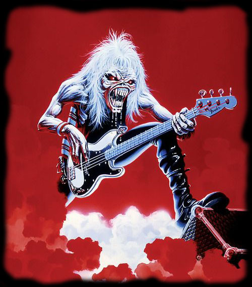

What is this site?
This site is a homage to the famous heavy metal band Iron Maiden. It showcases a composition of the many extra features of the band aside from their music.
My Intro to the Band:
Spanning four decades, Iron Maiden have blazed the musical trail and built their brand of metal with both gallups and gimmicks. Their mascot, Eddie, has journeyed alongside the musicians and reflects the full force in which Maiden deliver their sound. Iron Maiden are a combination of sonic, visual, and thematic and adventurous elements which create the unmistakable and unprecedented experience. Throughout the different eras of metal history, Maiden have inspired both musicians and fans, thus creating their legacy.
My own inspiration began as an excited young man, craving and yearning to find more of that "crunchy electric guitar" and lively tempo. It all started with a burned copy of The Best of the Beast. However... the Best was not nearly enough. I need more, I needed everything, I needed to experience the fully journey. So I started from the self titled debut: Iron Maiden, and I spent the next year (or so) moving from album to album, maiden heaven. Not only was the music completely addicting - with the energy and creativity - but the artwork and lyrics were able to transport me around from ancient rulers to untameable lands. Iron Maiden are undoubtedly the most full fledged musical experience.
